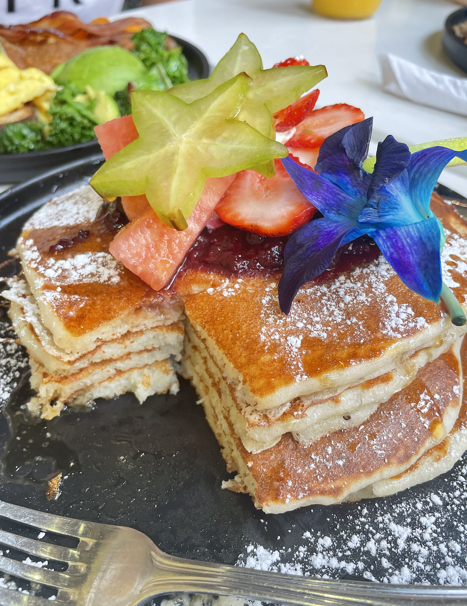
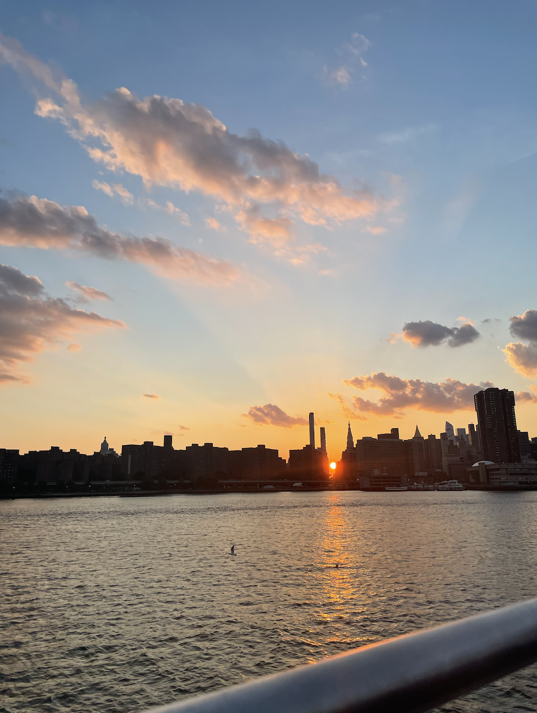

Sunflower, located in the neighborhood of Gramercy in Manhattan.

Manhattan views from the local MTA ferry.
If you're considering a trip to this sprawling metropolis, you'll find that despite its vastness and diverse offerings, a significant number of tourists concentrate their explorations on Manhattan and its famous landmarks.
Although these landmarks are undoubtedly worth a visit, they tend to overshadow the authentic cultural tapestry that weaves through the streets of New York City.
Exploring the lesser-known corners of such a dynamic environment can provide a more immersive and enriching experience. These hidden gems not only capture the essence of New York City but also offer a deeper understanding of its diverse culture and history.
Our mission is to guide you through the underrated and often overlooked gems, ultimately providing an insider's perspective on the in-depth culture, history, and vibrant neighborhoods that truly define New York City. Visiting native spots throughout the Big Apple will add to your overall experience - making it a wonderful story to share with your friends and family after your visit.